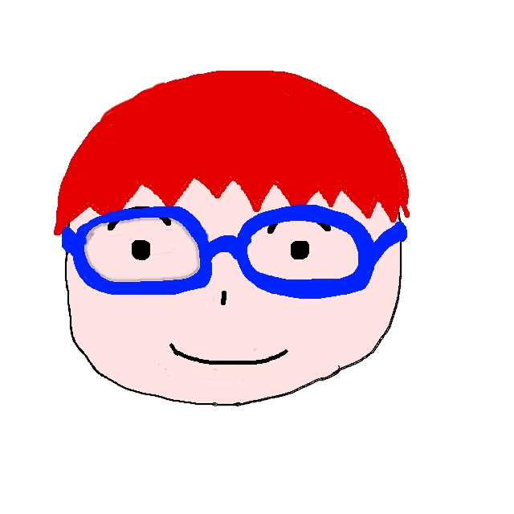
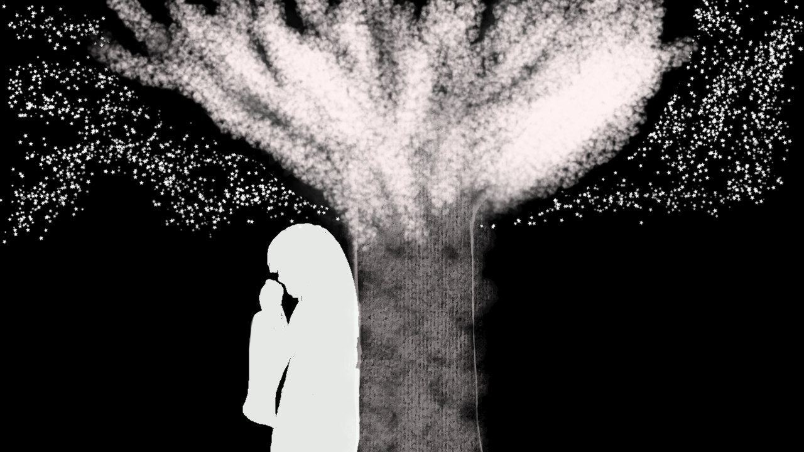
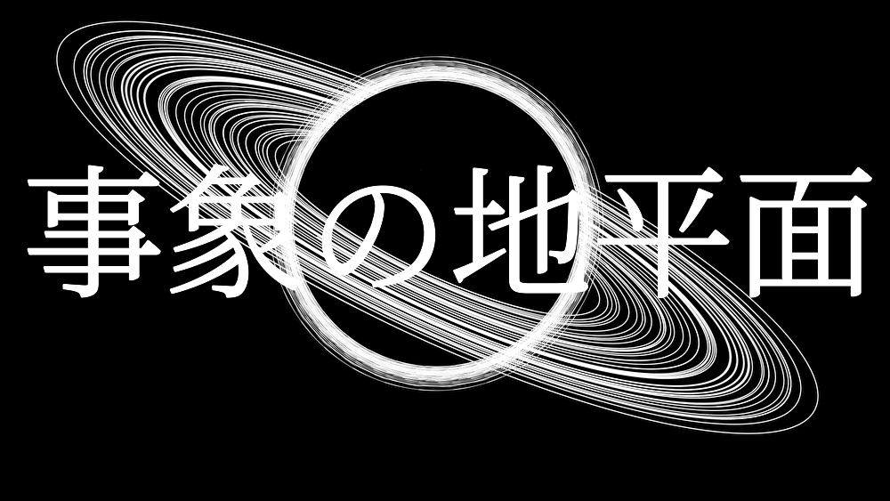
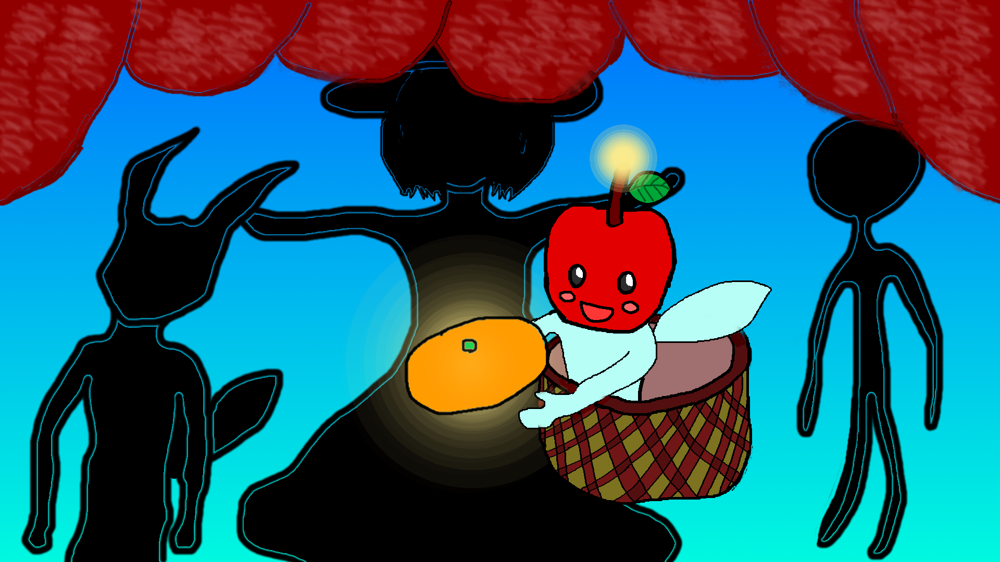
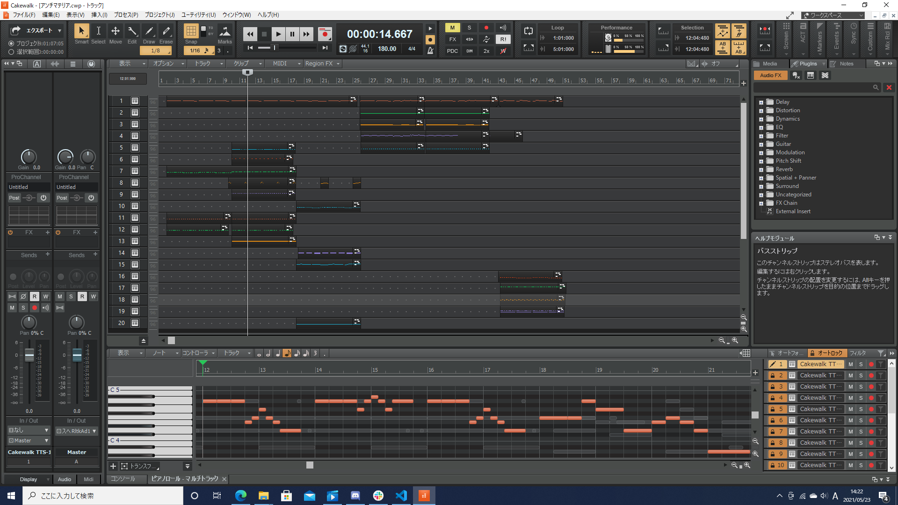

Portfolio 新人博士
何者 Profile
──────────────────

2002/05/12
生後19年
北海道札幌市出身
公立千歳科学技術大学
LTサークル/音楽制作サークル
目指すは野生の科学者。
コンピューターシミュレーションに興味があります。
ゲームや音楽を作るなどしています。
Youtube
Twitter
勉強中 Shoots of curiosity
──────────────────
C#,Java,HTML,CSS
作品 Children
──────────────────
「Fruit Catcher」
Unityで制作したゲームです。
籠を操作して空から落ちてくる果物を収穫するゲームです。
ダウンロードはこちら
パスワードは「FruitCatcher」です。

制作した楽曲「かえらずの言葉」
人を待つ、人ならぬ者
Youtube
ニコニコ動画

制作したボーカロイド曲「事象の地平面」
心に事象の地平面を飼う人間、あるいは天体
Youtube
ニコニコ動画
鋭意制作中 Only my fantasy yet
─────────────────────────────

Fruit Catcher season2

ボーカロイド曲「アンチマテリア」
スプラトゥーン風シミュレーター
おまけ 作ったまま眠らせてた曲たち
─────────────────────────────
シーラカンスシーカー
砂上の楼閣
Halloween
永世帝国
合格記念
グループ開設記念
水面の思考
残骸コネクト
信奉者
Self-introduction